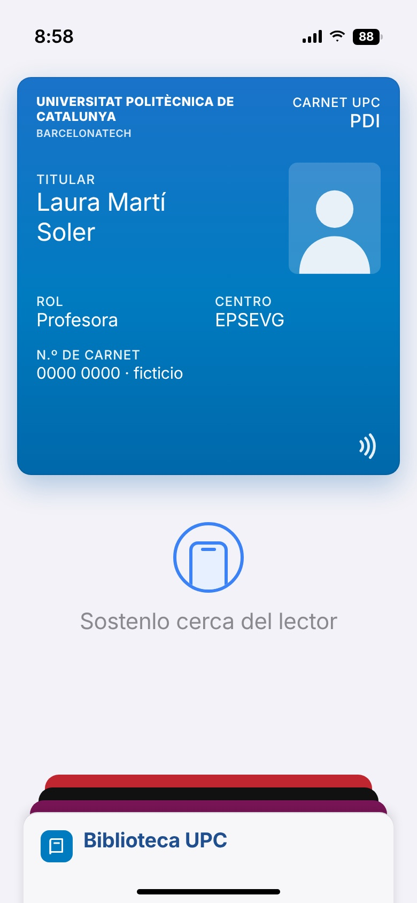
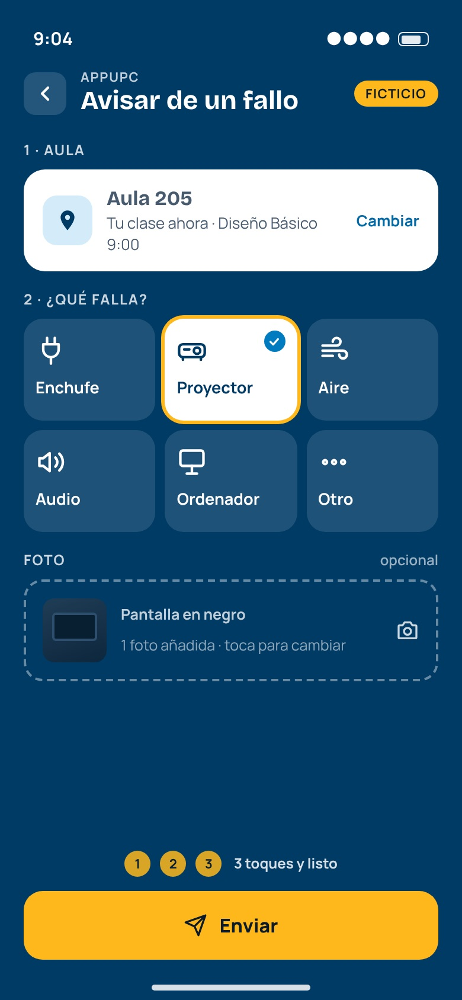
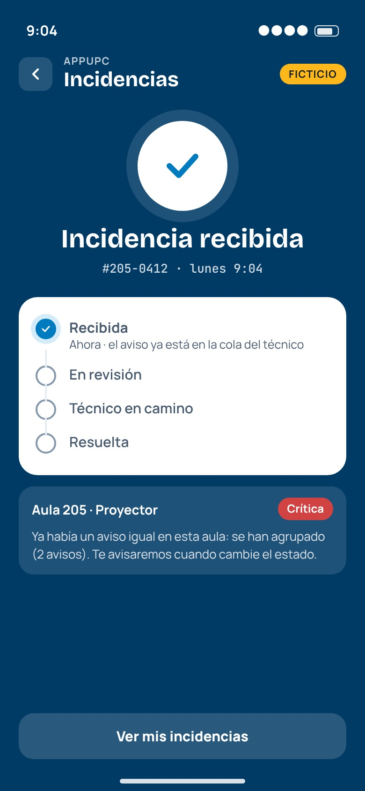
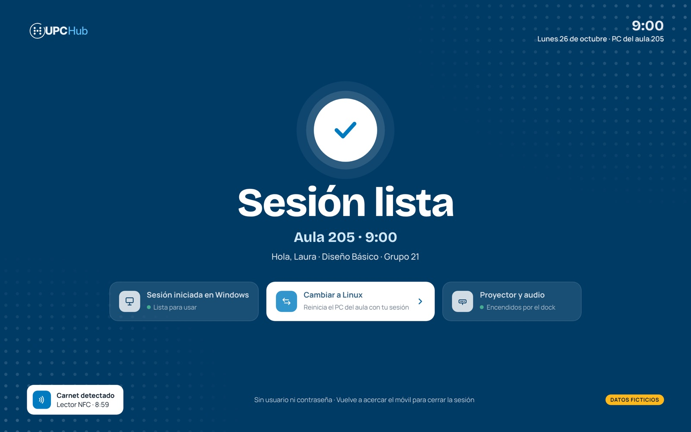
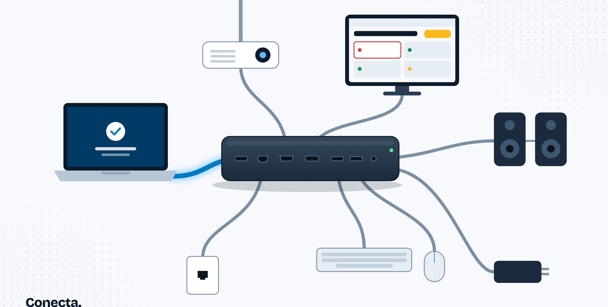
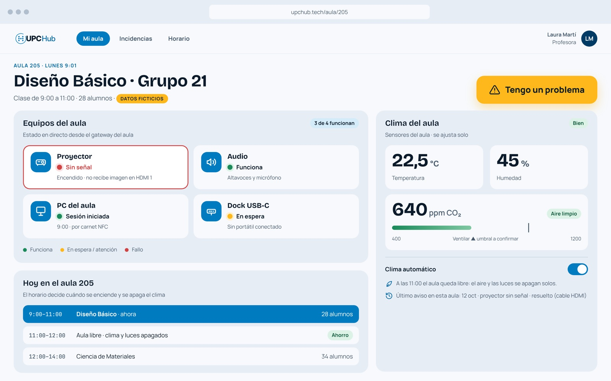
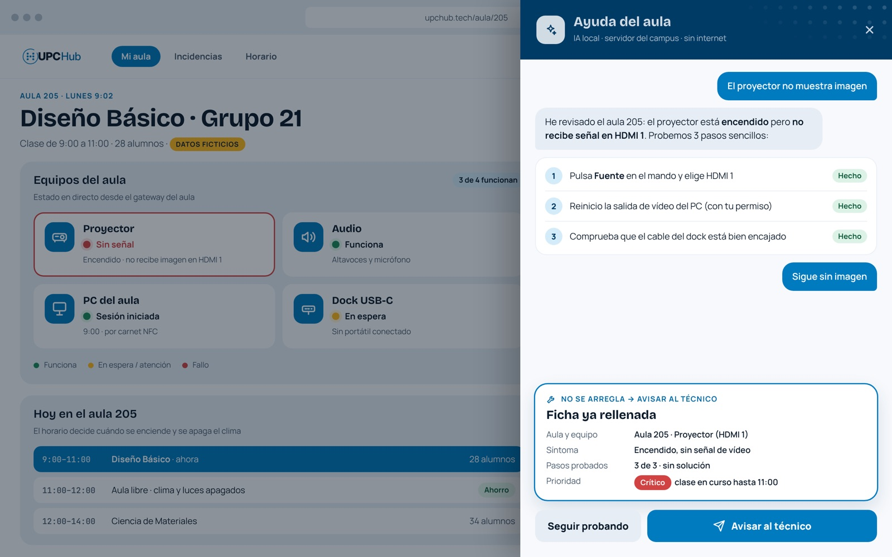
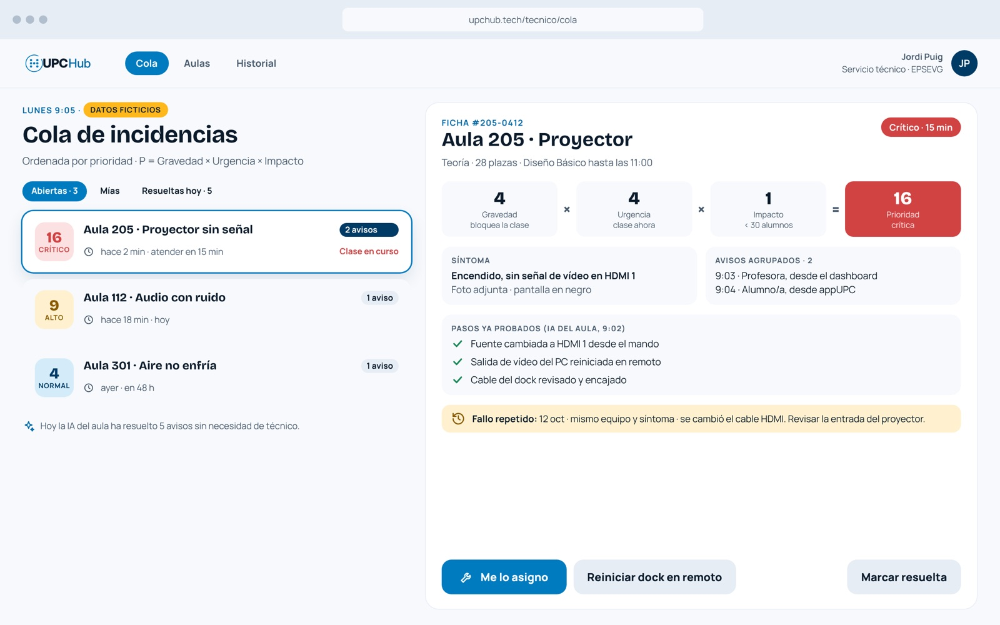

Identificació instantània
El professor s'identifica amb el carnet UPC al mòbil (NFC) i l'aula es reconeix automàticament en entrar.
Projecte acadèmic · UPC · EPSEVG
L'aula es prepara amb el carnet UPC al mòbil. I si alguna cosa falla, UPCHub t'ajuda a resoldre-ho o avisa el servei tècnic amb tot el context.

Com funciona
Tria un pas o deixa que avanci sol. Són les pantalles de la maqueta.







Prova la demo
Toca el mòbil: tria què falla, envia-ho i mira què passa després.
1 · AULA
2 · QUÈ FALLA?
123 3 tocs i llest
Queda registrat a l'historial de l'aula perquè el servei tècnic vegi si es repeteix.
Per al servei tècnic
Cada avís rep una prioritat P = G × U × I (gravetat, urgència i impacte). Selecciona una incidència, assigna-te-la o marca-la com a resolta.
Avui la IA de les aules ha resolt 5 avisos sense tècnic.
Totes les xifres són dades d'exemple per mostrar el concepte; no provenen d'un pilot real.
Què inclou
El professor s'identifica amb el carnet UPC al mòbil (NFC) i l'aula es reconeix automàticament en entrar.
Qualsevol errada es reporta des de l'app i arriba al servei tècnic amb l'estat de l'aula ja inclòs.
Un assistent que s'executa en un servidor local del campus diagnostica i resol les incidències més habituals abans de necessitar escalar-les.
Qui ho prefereixi pot fer servir el seu portàtil a classe i al despatx, sense dependre de l'ordinador compartit.
El dashboard es sincronitza amb l'horari real de cada aula, sense configurar-ho classe a classe.
Sensors d'aire i temperatura a cada aula regulen l'AC segons l'ocupació i l'horari real; el consum es contrasta amb les dades de SIRENA i QaireUPC.
Cinc fluxos de maquinari a resultat, sincronitzats per un estat i un horari compartits dins del nucli.
Prova pilot
Estem validant UPCHub amb un petit grup de professors abans de construir-lo. Nom, aula i una pregunta d'interès, res més.
Omplir el formulari (1 min)